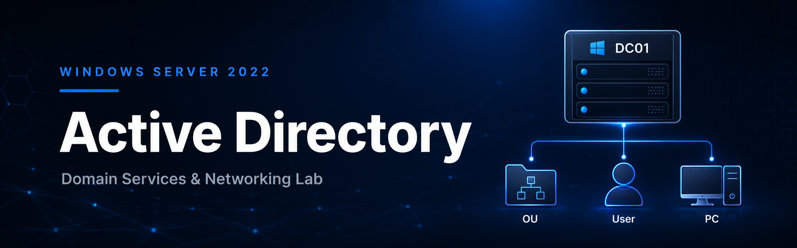

Systems Lab | April 2026 - Present
Windows Server, Active Directory and Network Services Lab
Built an Azure-based Windows domain environment with AD DS, a domain controller, OUs, users, security groups, DNS records, Remote Desktop access, and file share permissions.
- Promoted Windows Server 2022 to a domain controller and configured a new forest with domain-joined client access.
- Created and tested DNS A records and CNAME records, observed DNS cache behavior, and used
ipconfig /flushdnsduring troubleshooting. - Configured file shares, NTFS/share permissions, security groups, access control, and Group Policy concepts for IT support practice.
Windows Server 2022Active DirectoryDNSPowerShellAzureNTFS Permissions
Video walkthrough tutorial
Part 1: Active Directory Overview
Project walkthrough covering what can be done in Active Directory, Group Policy, password lockout simulation, and drive share permissions.
Part 2: Network Interface, DNS and PC Onboarding
Setting network interface cards properly in Azure VMs, configuring DNS/static IP settings, onboarding a new computer to the domain, and preparing the workstation.